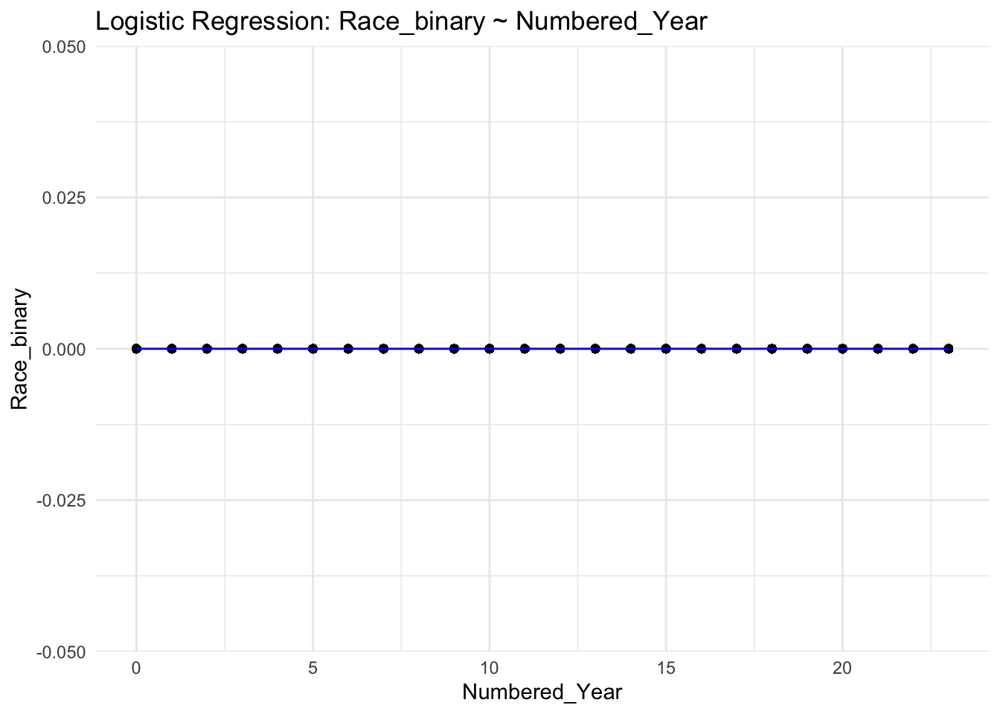

── Attaching core tidyverse packages ──────────────────────── tidyverse 2.0.0 ──
✔ dplyr 1.1.3 ✔ readr 2.1.4
✔ forcats 1.0.0 ✔ stringr 1.5.0
✔ ggplot2 3.4.3 ✔ tibble 3.2.1
✔ lubridate 1.9.3 ✔ tidyr 1.3.0
✔ purrr 1.0.2
── Conflicts ────────────────────────────────────────── tidyverse_conflicts() ──
✖ dplyr::filter() masks stats::filter()
✖ dplyr::lag() masks stats::lag()
ℹ Use the conflicted package (<http://conflicted.r-lib.org/>) to force all conflicts to become errors
load(here::here("dataset/traffic_violations.RData"))wd <- traffic_data_clean %>%rename(Arrest_Type =`Arrest Type`)# Race vs Arrest Typeggplot(wd, aes(x = Race, fill = Arrest_Type)) +geom_bar(position ="dodge") +labs(title ="Distribution of Race by Arrest Type", x ="Race", y ="Count",fill ="Arrest Type") +theme(axis.text.x =element_text(angle =45, hjust =1)) +scale_y_continuous(labels = scales::comma)
ggplot(wd, aes(x = Race, fill = Accident)) +geom_bar(position ="dodge") +labs(title ="Distribution of Race by Accident", x ="Race", y ="Count",fill ="Accident") +theme(axis.text.x =element_text(angle =45, hjust =1)) +scale_y_continuous(labels = scales::comma)
# Statistical Modelinglibrary(tidyverse)traffic_data_clean <- traffic_data_clean |>mutate(Race_binary =ifelse(Race =="Hispanic", 1, 0))filtered_data <- traffic_data_clean |>filter(Year >=2000& Year <=2023) |>mutate(Numbered_Year = Year -2000)model <-glm(Race_binary ~ Numbered_Year, family = binomial, data = filtered_data)
Warning: glm.fit: algorithm did not converge
ggplot(filtered_data, aes(x = Numbered_Year, y = Race_binary)) +geom_point() +geom_smooth(method ='glm', formula = y ~ x, se =FALSE, color ="blue", size =0.5) +labs(title ="Logistic Regression: Race_binary ~ Numbered_Year",x ="Numbered_Year",y ="Race_binary") +theme_minimal()
Warning: Using `size` aesthetic for lines was deprecated in ggplot2 3.4.0.
ℹ Please use `linewidth` instead.

From our last blog post, we saw that one of the most big, obvious trends was that the Driver’s License State category was predominantly from Maryland. Since this is to be expected given that the data is from a county in Maryland, this may be a boring part of the data. So, we chose to explore some other relationships that might be confounded by this major trend we identified.
To explore our data further in this way, we first looked at relationships among different variables and groupings by looking for trends or patterns between race categories and arrest types as well as race categories and accident types. We then focused on developing a better understanding of the specific relationship between race and arrest types and race and accident types by also including the time of day to see if this too affects the outcome of the traffic violation.
Beginning to think about statistical modeling, the response variable that we are interested in is the outcome of the traffic violation, which in our data is represented as arrest type and accident type. The predictor variables we are interested in are race and time of day. To include time of day we would need to perform some transformations to better capture the relationships between the variables. Since time is going in a loop as it goes to the end of the day and then the values go back down to 0, we need to transform this column of the data to be continuous instead of a cycle. We will fit a linear model so that we can see how the predictor variables affect the response variable. For this, we will also need another transformation to represent the outcome of the traffic violation as binary variables. For the arrest type, we can choose “A – Marked Patrol” to be represented by 1, and each other arrest type to be 0. Similarly, for the accident column, we can choose “Yes” to be 1 and “No” to be 0. After these transformations, we can use the categorical variables in the linear model.
For our initial statistical modeling, we began by using a logistic model with the race as the response variable and the year as the predictor variable to observe the potential relationships between the differences in race categories reported for traffic violations over a number of years. For this initial modeling, we transformed the race variable to be binary by mutating “Hispanic” to be 1 and every other race category to be 0. We also transformed the Year variable to be represented as a value showing how many years from 2000 it is. We also only included the years 2000-2023 to first see how we could analyze a subset of the data on a smaller scale. For our future statistical modeling, we will also include the other race categories to see the trends and patterns between the different categories and include more years to see more widespread trends. This initial model showed a straight horizontal line after the regression, so in our further analysis we will additionally add more variables to find a model that reveals more about the data and its trends.